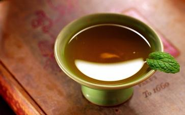

小鸡吃饲料35天出栏 反季菜是如何经过长期喷农药种植出来的？养猪时如何给猪喂饲料四个月就催大？刚孵出的小鸡为何三十多天后就可以出栏售卖？近日，在石家庄举行的公民
昨日，这位来自辽宁抚顺的农民徐清元告诉记者，有农药残留的蔬菜、吃添加剂长大的猪、鸡，很难用肉眼辨别出来，因此危害很大。对于蔬菜、肉食食品安全问题，只能通过加大监管力度，杜绝有毒蔬菜、肉类产品流入市场。
给蔬菜喷药 妻子竟中毒徐清元今年36岁，来自辽宁省抚顺市新宾县平顶山镇的一个村子。
除了先天近视戴了一副眼镜外，徐清元满是老茧的大手、朴素的衣衫、憨厚的举止都带着土地的气息。但在各地公民德行教育论坛的多次演讲中，他种反季菜、饲养家禽的经历总能震惊众人。
徐清元说：“现在的人喜欢吃新鲜的，而反季
“而我卖的白菜是反季节的，它春天种、夏天收，所以害虫、病菌特别多。
“反季白菜到收获时，正是盛夏最热的时候，害虫和病菌特别厉害。尤其是快要成熟的时候，白菜让虫子吃得全是一些窟窿眼儿，影响出售。为了多挣点钱，我就打药。赶上连日是晴天，害虫一多，就得打杀虫剂；如果阴雨天比较多，病菌又比较多，还得打一些抗病菌类的药物。
“白菜快要成熟的时候，特别爱从心里往外烂，并且传染，几天不及时打药，周边的菜越烂越多，这样就得一个
“打的药有的非常毒，按说明书打药时得戴上手套、口罩，早、晚时间打才能保证打药人的安全。有一回，我媳妇打药就中毒了，幸亏发现得早。
“按这种药的说明书，收获前一个月就不能用药了，但就是要成熟的时候菜才得这个病，不得不打。这时候有来买菜的，我就得卖，根本不管农药残留不残留。那菜是一万多斤，多卖一毛钱就多卖一千块钱。”
徐清元介绍，种植了两年反季白菜后，他挣了一些钱。后来，国家加大了对蔬菜农药残留的检测力度，反季菜不好进入菜市场了，徐清元就不再种植。
徐清元说，现在，他所在的村里种植反季白菜的比以前少了百分之八十多。
饲料4个月把猪催到200斤 2007年，徐清元开始养猪。他说：“我在家养了几头猪，想让它们快点长大卖钱，就像养猪场一样，按一定比例往
徐清元说，按照饲料说明书上最后一条，“本饲料含有药物添加剂，出栏前7天停用。”但猪养到四个来月、200多斤快出栏的时候，买猪的人特别多，出价八九块钱一斤。“我当时也想到饲料7天前停用的问题了，但当时价钱挺高，想到能多卖点钱，我就把这个猪卖了。有人跟我说7天停用的问题，我告诉他，你说你7天之后再卖这个猪，7天之后要掉价的话，我不赔钱了吗？”徐清元说，大多养猪的都不会等停药7天后再把猪卖掉。
徐清元养猪挣了七千元钱，不久就花了，因为他的母亲患了重病。老太太心脏不好、高血压，还有静脉炎，后来突然手脚发麻，晚上睡不着觉。医生说，老人得少吃肉，特别是猪肉，否则可能发展成脑血栓！而老人最爱吃猪肉。
母亲的重病让徐清元有些警醒，他开始想自己养猪，出栏前7天照样喂有化学成分的饲料，大家都这么干，那猪肉里不都有毒吗？即使是遵守7天停用的规定，表面上检测不出来，但一直用化学饲料喂大的猪难保没毒。
鸡疑因吃饲料长得太快而
徐清元爱观察，2009年8月份，他又发现了养鸡场内的问题。他在邻村两三个养鸡场发现，竟然有自杀的鸡，当地叫“蹦死的”，一般都是又肥又壮的那种。
“养鸡场的人介绍说，有的鸡在鸡群里，忽然就跳起来，之后拍着翅膀‘嘎嘎’地叫，蹦几次之后，倒在地上挣扎，几分钟就死亡了，像自杀似的。养鸡场主说可能是营养过剩。鸡现在最少养35天就能出栏。原来，小鸡正常地长成大鸡要一年的时间，现在四五十天就出栏了，长得这么快，难保不会出问题。”徐清元说。
一次，徐清元
“后来我问一个认识的卖鸡饲料的店主，这样的鸡肉里有没有对人有害的东西？店主说，他是兽医，也卖饲料、卖兽药，但他从来都不吃鸡肉。” 徐清元说。
肉眼难辨毒菜肉河北省食品质量监督检验研究院农副产品检验部的赵一军负责蔬菜、肉食食品检验。昨日，他告诉记者，对于蔬菜残留农药，市民只凭感官无法判别出来。一般喷洒在蔬菜上的农药一部分挥发到空气当中，另一部分会进入植物表层细胞，存在于细胞间隙或内部。除非是很大量的农药残留才会有刺激性气味，一般凭外观无法判断出来。目前，相关部门可通过精密仪器鉴别出残留农药，不合格的蔬菜一般不允许进入市场。
对于肉食类产品，赵一军介绍，目前禽畜用的饲料内含有一定的抗生素，但这些饲料添加的次数及时间都有严格的要求，如果含量过多，对人体也会产生一定的副作用。此外，添加的瘦肉精能够激发牲畜肾上腺激素，促进牲畜多长瘦肉，但如果用量过多会残留在动物体内，人吃了后会影响内分泌。目前，只能通过仪器才能鉴别肉品是否含有激素类物质，肉眼无法识别。
赵一军介绍，现在随着科技发展，反季节种植技术也趋向成熟，但目前采用的防虫方法主要还是喷洒农药。这种方法简单有效，比较普遍。饲料配比合理性也有了进一步提高，但在利益的驱使下也有一些不法商贩不按规定添加饲料。
赵一军表示，对于蔬菜、肉食产品，相关部门一直在加大监管力度，从而杜绝有毒蔬菜、肉类产品流入市场，市民可放心到正规超市、市场购买。
种地也要讲昨日，徐清元告诉记者，有农药残留的蔬菜、吃添加剂长大的猪、鸡，很难用肉眼辨别出来，因此危害很大。他建议最好多食用应季蔬菜。
徐清元说，2008年，他偶然听到一名老教授讲传统文化，被吸引住，之后买来书籍、光盘开始学习《
“现在想想，我一个农民，种菜、养猪都不知道害了多少人，真是寝食难安。这就是违背了道德，违背了自然规律。”
2009年10月，徐清元开始参加由中央电视台原主持人
向大众公开自己的“恶”行，徐清元表示，开始他也有很大的心理负担，但为了广大国民能有个好的身体，他愿意尽自己最大的努力感化更多的人。